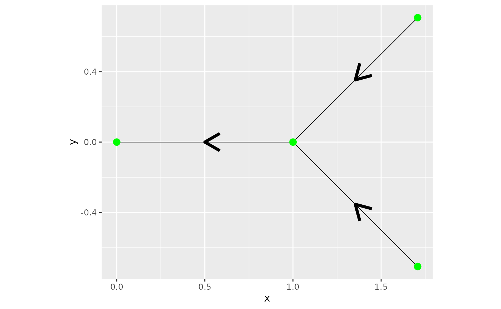

An example with directional models
David Bolin, Alexandre B. Simas, and Jonas Wallin
Created: 2024-08-08. Last modified: 2024-08-23.
Source:vignettes/directional_model.Rmd
directional_model.RmdIntroduction
This is a tutorial for working with directional models.
edge1 <- rbind(c(1,0),c(0,0))
edge2 <- rbind(c(1.75,1),c(1,0))
edge3 <- rbind(c(1.75,-1),c(1,0))
edges = list(edge1,edge2,edge3)
graph <- metric_graph$new(edges = edges)
graph$plot(direction = T)
The covariance is assymetric on nodes
graph$build_mesh(h=0.01)
kappa <- 1
tau <- 1
alpha <- 1
P <- c(1, 0.5)
C<-spde_covariance(P,kappa=kappa,tau=tau,
alpha=1,
graph=graph,
directional = T)
graph$plot_function(X = C, plotly = TRUE)## Loading required namespace: plotlyThe covariance is upstream
P <- c(3, 0.5)
C<-spde_covariance(P,kappa=kappa,tau=tau,
alpha=1,
graph=graph,
directional = T)
graph$plot_function(X = C, plotly = TRUE)Using istotropic variances
## Warning in graph$setDirectionalWeightFunction(f_in = function(x) {: The
## constraint matrix has been deleted
C<-spde_covariance(P,kappa=kappa,tau=tau,
alpha=1,
graph=graph,
directional = T)
graph$plot_function(X = C, plotly = TRUE)Lets examine the posterior mean by adding two locations
u <- sample_spde(kappa = kappa, tau = tau, alpha = alpha, directional=T,
graph = graph, type = "mesh")
graph$plot_function(X = u, plotly = TRUE)
PtE_resp <- rbind(c(2,0.5),
c(3,0.5))
resp <- c(1,1)
Eu <- MetricGraph:::posterior_mean_obs_alpha1(c(0,tau, kappa),
graph,
resp, #resp must be in the graph's internal order
PtE_resp,
graph$mesh$PtE,
type = "PtE",
directional = T)
graph$plot_function(X = Eu, plotly = TRUE)## Warning in graph$setDirectionalWeightFunction(f_in = function(x) {: The
## constraint matrix has been deleted
Eu <- MetricGraph:::posterior_mean_obs_alpha1(c(0,tau, kappa),
graph,
resp, #resp must be in the graph's internal order
PtE_resp,
graph$mesh$PtE,
type = "PtE",
directional = T)
graph$plot_function(X = Eu, plotly = TRUE)